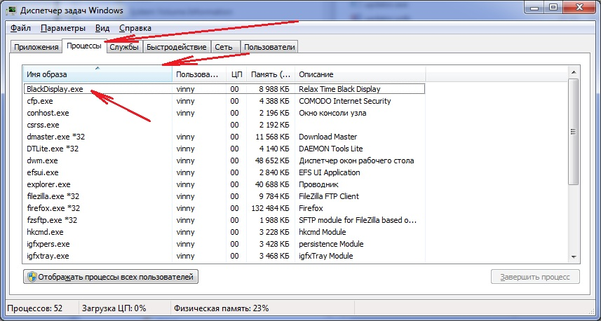
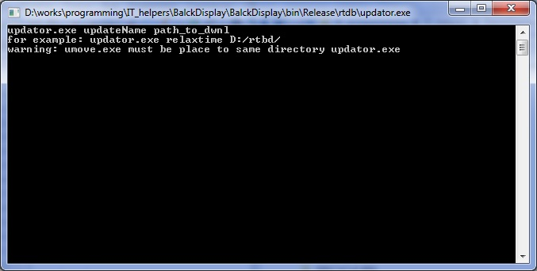
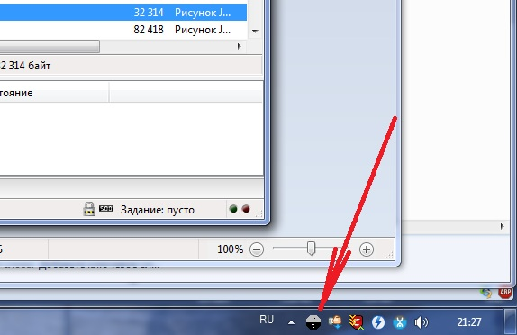
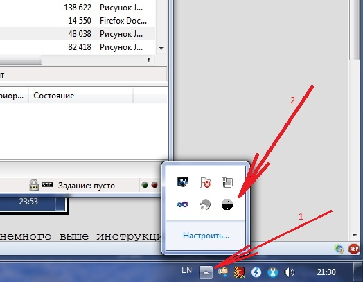

Cправочная система программы напоминания о времени отдыха
Установка и удаление программы
- На Windows 8 программа должна работать без дополнительных установок. Для работы программы под более старыми версиями Windows требуется установленная Microsoft .NET Framework 4.0 [весит около 50 Мб] или совместимой с ней (более высокой) версии.
Программа тестировалась на Windows 7 x64 и Windows 8.1 x64, теоретически может работать на системах Windows Vista или новее, в том числе и на 32-х битных. - Скачать последний дистрибутив программы с данной справкой вы можете с сайта relaxtime.8vs.ru.
- Перед использованием программы ознакомьтесь с лицензией на её использование. Вы можете применять программу только если полностью поняли и согласны с условиями лицензии.
- Создайте или выберите существующую папку, где будет работать ваша программа (архив уже содержит корневую папку с именем rtdb), и распакуйте туда дистрибутив с помощью любого архиватора, например 7-Zip.
На системах Windows 7 и новее, zip-архив можно открыть прямо в проводнике. - Запустите программу BlackDisplay.exe из папки, куда вы распаковали содержимое архива
Если программа выдаёт ошибку, значит у вас не установлена нужная версия .NET Framework или неверно заданы права доступа к директории.
.NET framework можно скачать с сайта Microsoft. На момент написания справки файл установки весил около 50 Мб. По-умолчанию предлагается скачать установщик, который уже скачает сам файл. По ссылке внизу страницы скачивания с надписью ".NET Framework 4 (автономный установщик)" можно скачать и сразу сам установочный файл.
Без установки .NET использование программы невозможно. Если вы не хотите скачивать файл, не устанавливайте программу и просто удалите созданную вами директорию вместе со всем содержимым.
Если у вас Windows 8 или выше, дело, видимо, не в .NET. Смотрите инструкции ниже.Что делать, если программа запустилась с ошибкой, но .NET версии 4.0 точно установлена.
Давайте проверим, запущен ли BlackDisplay.exe.
Нажмите сочетание клавиш ctrl+shift+Esc (все три клавиши крайние слева на клавиатуре), дождитесь запуска диспетчера задач, перейдите на вкладку "процессы". Нажав на заголовок колонки "Имя образа" (первая колонка с именами программ) вы можете отсортировать запущенные программы по имени.
Посмотрите, есть ли процессы с именами BlackDisplay.exe, updatorvs8.exe или umove.exe 
Если запущен процесс umove.exe, но нет BlackDisplay.exe, возможно, программа после установки сразу же начала обновление и сняла BlackDisplay.exe (в таком случае завершение BlackDisplay.exe должно было произойти без выдачи сообщений об ошибках, но иконки на панели задач не видно).
Это возможно, если вы скачали старую версию программы с другого сайта, или по каким-то другим причинам установили старую версию (то есть не скачали перед установкой новый архив с сайта программы).
Если это так, немного подождите (1-2 минуты), возможно, BlackDisplay.exe запустится самостоятельно и иконка программы появится в панели задач.Для другой проверки, запустите находящийся в той же директории файл updatorvs8.exe
Если выдалось окно, подобное этому:
нажмите в нём любую клавишу или просто закройте его.
На некоторых системах запуск updatorvs8.exe может длиться до 20 секунд (до появления окна).
Если никаких ошибок не появилось, значит .NET и программа, видимо, установлены, но мы столкнулись с ошибкой в программе BlackDisplay.exe.
Если updatorvs8.exe запустился нормально или вы получили сообщение о закрытии программы:- Убедитесь, следуя инструкциям ниже, что права доступа на каталог программы выставлены верно
- Проверьте, что в папке, откуда вы запускали программу, присутствует один или несколько из файлов: "error_rtbd.log", "error_um.log", "error_u.log".
- Опишите, что вы видели в диспетчере задач (запущен или нет BlackDisplay.exe, updatorvs8.exe, umove.exe),
- Обратитесь к разработчику приложения по e-mail, указанный в пункте "О программе" контекстного меню программы, приложив все имеющиеся файлы из этого списка и описание процесса установки.
Проверим, верно ли заданы права на папку программы
С правами могут быть проблемы, если вы распаковывали архив в папку "Program Files" или другую общую для пользователей папку, защищённую операционной системой.
В таком случае- Откройте в проводнике папку, в которой расположена программа
- Нажмите правой кнопкой мыши на эту папку, выберите (левой кнопкой) пункт "свойства"

- В открывшемся окне выберите вкладку "безопасность". Отобразится список пользователей. Выберите (левой кнопкой мыши) своего пользователя или группу "пользователи".
- Нажмите на кнопку "изменить"

- В появившемся окне снова выберите того же пользователя или группу.
- Убедитесь, что в списке ниже, напротив пунктов "Изменение" и "Запись" стоят флажки в графе "Разрешить".

- Если их нет, отметьте их. Если вы не можете их отметить, обратитесь к администратору вашего компьютера.
- Далее закройте оба открытых окна нажатием на кнопку "OK".
- После этого программа должна заработать (запустите её заново)
- Запустив программу вы увидите предложение принять лицензию программы, а так же новую иконку в панели задач (обычно справа внизу экрана, рядом с часами)
Рисунок (кликните на "+", чтобы развернуть)

Если вы не видите иконки, проверьте, возможно она скрыта Windows.

Если вы не нашли такой иконки, смотрите немного выше инструкции при возникновении проблем - Во время первого запуска программа сама зарегистрирует себя как запускаемая при старте системы
-
Настроенный по умолчанию брандмауэр Windows не должен блокировать программу.
Если же ваши файервол или антивирус блокирует программу, настройте его.
Требуемые разрешения и замечания по безопасностифайервол, скорее всего, требует настройки только некоторых из перечисленных ниже разрешений либо не требует настройки вообще- Все программы обращаются к сети Интернет по следующим адресам:
- Почтовый сервер mx.yandex для отсылки отзыва при деинсталляции (BlackDisplay.exe, порт 25)
- Адреса провайдера (порт 80; updatorvs8.exe к сайту relaxtime.8vs.ru)
- mc.yandex.ru через порт 80 (используется для статистики обновлений; updatorvs8.exe)
- Запуск файлом BlackDisplay.exe файлов umove.exe и updatorvs8.exe
- Запуск файлами umove.exe и updatorvs8.exe друг друга
- Запуск файлом umove.exe файла BlackDisplay.exe
- Запись всеми тремя файлами в ключ реестра HKEY_CURRENT_USER\Software\Microsoft\Windows\CurrentVersion\Run
- Полный доступ (исключая смену разрешений) на операции с файловыми объектами в директории установки программы для всех трёх файлов
- Установка глобального хука (если программа BlackDisplay.exe настроена по умолчанию) на клавиатуру и мышь (можно отключить в настройках)
- Программу не требуется добавлять в исключения антивируса. Файлы программы проверяются на вирусы и не должны распознаваться как вирусы (если это не так, сообщите разработчикам)
- Все программы обращаются к сети Интернет по следующим адресам:
- Если нужно удалить программу:
- Штатное удаление
- Войдите в контекстное меню программы, используя правую кнопку мыши
- Выберите пункт меню "О программе"
- Нажмите левой кнопкой мыши в правом верхнем углу появившегося окна кнопку "Удалить"
- В диалоговом окне подтвердите, что хотите удалить программу
- Программа удалит свои записи из системного реестра, пошлёт сообщение о деинсталляции разработчикам и выдаст сообщение об успешном удалении
- Вы можете послать отзыв о программе с причиной её удаления из появившегося окна (а можете не посылать)
- Слева внизу появившегося окна нажмите кнопку "Папка программы", чтобы попасть в каталог программы
- Закройте окно программы, если вы уже послали отзыв и около кнопки послать стоит надпись "Отослано"
- Через контекстное меню программы (используя пункт "Выход") закройте программу
- Вручную, из открытого вами на предыдущем шаге проводника, удалите каталог программы
- Удаление вручную
- Программа регистрируется на запуск в момет старта операционной системы в разделе системного реестра
HKEY_CURRENT_USER\Software\Microsoft\Windows\CurrentVersion\Run
с именем записи "Relax Time Black Display".
Используя программу regedit, входящую в поставку ОС Windows, вы можете удалить запись реестра по данному пути с именем "Relax Time Black Display"
Далее просто удалите каталог программы
- Программа регистрируется на запуск в момет старта операционной системы в разделе системного реестра
HKEY_CURRENT_USER\Software\Microsoft\Windows\CurrentVersion\Run
с именем записи "Relax Time Black Display".
- Штатное удаление